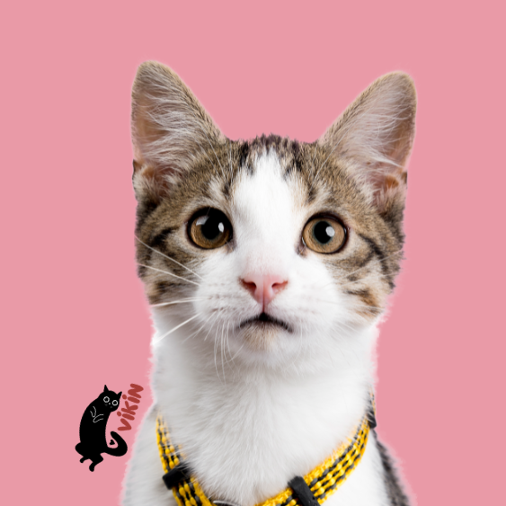
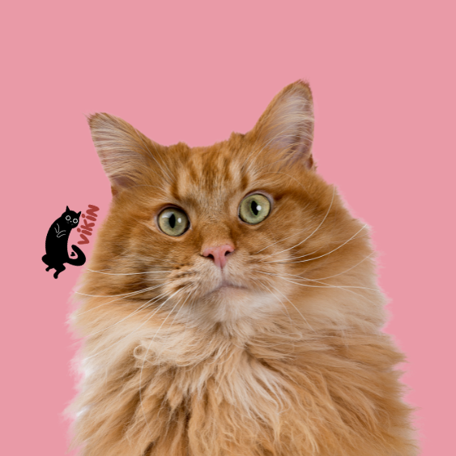
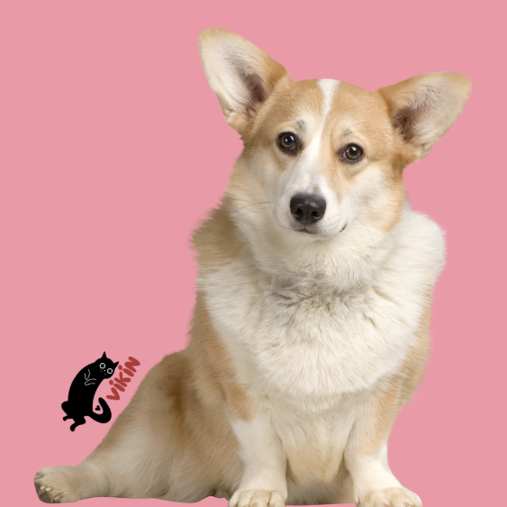
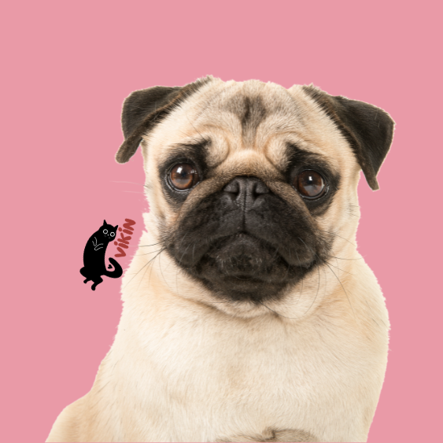
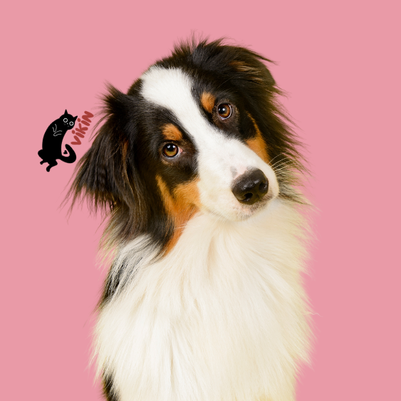
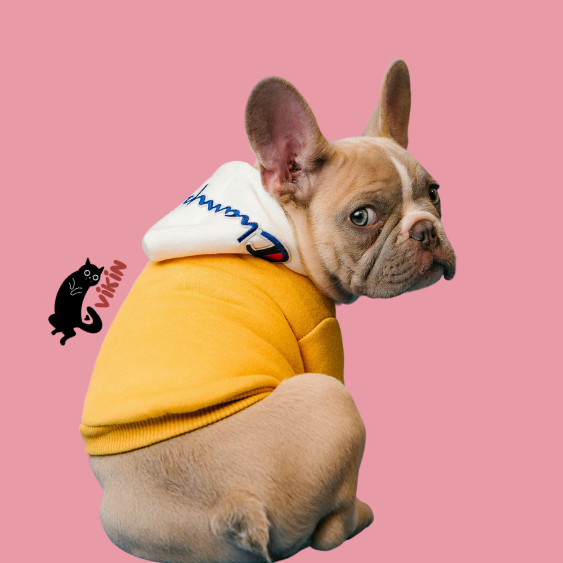
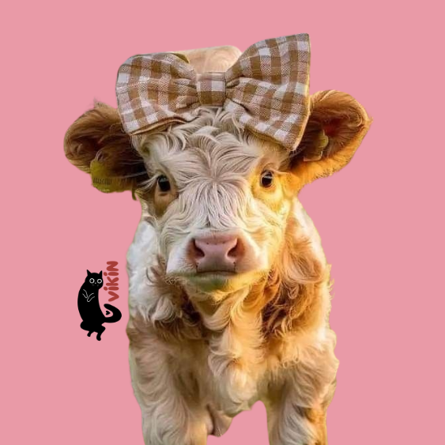
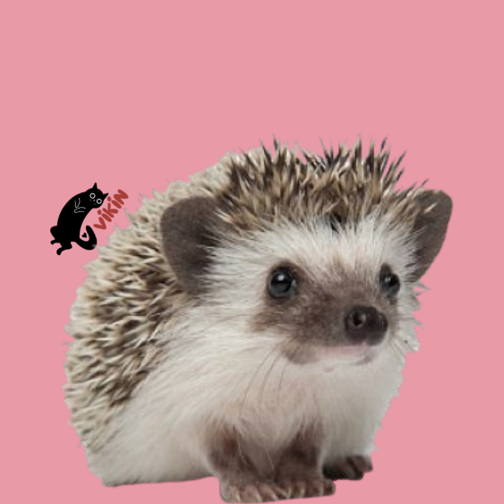

Thor foi encontrado pelo instituto Cão Sem Dono em um terreno abandonado! O resgate foi feito pela
moradora do bairro que o viu em uma caixa de papelão, agora Thor está sendo cuidado e está a espera de
sua nova família!

Beth!
Beth foi encontrada pelo Ampara Animal abandonada em uma estrada! O resgate foi feito pelo um motorista
que por sorte a viu e a trouxe para a fundação, agora Beth não tem tanto medo de seus cuidadores e
consegue conviver com outros gatos!

Dior!
Dior foi encontrado pelo Ampara Animal também abandonado em uma estrada! O resgate foi feito por uma
senhora que por acaso passava pelo local, Dior está se recuperando aos poucos e uma nova família iria
lhe fazer bem!

Barbecue!
Barbecue foi encontrado pelo Suipa abandonado na Av.Paulista! O dono de um restaurante o acomou por dias
até chamarem a instituição, Barbecue sofreu maus tratos por anos e ainda tem alguns traumas, é um cão
dócil e se dá bem com os outros animais!

Buldog!
Buldog foi resgatado da antiga dona pela Suipa, os vizinhos a acusaram de maus tratos! A dona o mantinha
em cativeiro sem comida por dias, Buldog sofreu muito, mas a instituição não desistiu dele e agora é um
cão animado e consegue conquistar muitos corações!

Gordinha!
Gordinha foi encontrada pelo Inst. Luísa Mell, por ser de raça os donos a mantinham em cativeiro para
procriação, os filhotes eram vendidos e banacavam o casal, mas a instituição persisitiu no seu resgate!
Agora, Gordinha está se dando bem com todos e tem uma nova oportunidade para encontrar uma família.

Tulipa!
Tulipa foi encontrada pela Suipa, por ser de raça os donos a mantinham em cativeiro para procriação, os
filhotes eram vendidos e banacavam o casal, mas a instituição persisitiu no seu resgate! Agora, Tulipa
está se dando bem com todos e tem uma nova oportunidade para encontrar uma família.

Flor!
Flor foi encontrada pelo Ampara Animal, por ser de raça os donos a mantinham em cativeiro para
procriação, os filhotes eram vendidos e banacavam o casal, mas a instituição persisitiu no seu resgate!
Agora, Flor está se dando bem com todos e tem uma nova oportunidade para encontrar uma família.
Beringela!
Beringela foi encontrada pelo Inst. Luísa Mell, por ser de raça os donos a mantinham em cativeiro para
procriação, os filhotes eram vendidos e banacavam o casal, mas a instituição persisitiu no seu resgate!
Agora, Beringela está se dando bem com todos e tem uma nova oportunidade para encontrar uma família.

Mortadela!
Mortadela foi encontrada pelo Ampara Animal, por ser de raça os donos a mantinham em cativeiro para
procriação, os filhotes eram vendidos e banacavam o casal, mas a instituição persisitiu no seu resgate!
Agora, Mortadela está se dando bem com todos e tem uma nova oportunidade para encontrar uma família.